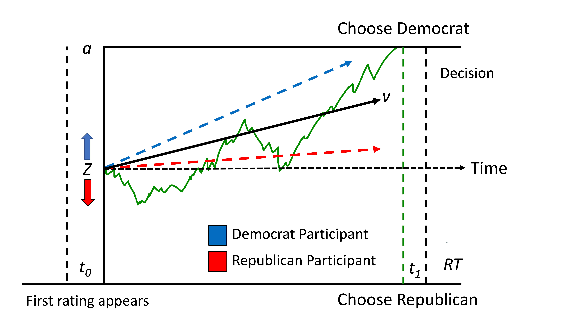

Drift Diffusion Modeling in Political Decision-Making
Investigating the impact of cognitive biases on information processing and belief updating
Published in CognitionGitHub Code
Project Overview
In this project, I applied drift diffusion modeling to examine how individuals with varying political beliefs gather information and update their beliefs. My findings can provide valuable insights into the decision-making processes and cognitive biases of users, which can be utilized in data science and quantitative UX domains.
Key Findings
- Discovered the influence of prior beliefs in making pre-existing opinions resistant to change
- Detected how motivations can influence the way people process new information
Technical Approach
Participants
(N = 182) were recruited from CloudResearch, with 58% self-identifying as Democrats
Data Collection and Analysis
- Collected data on Cognitive Reflection (Omega = .65), Numeracy (Omega = .75), and Need for Cognition (Omega = .89) to assess individual differences in cognitive abilities
- Utilized drift diffusion modeling to analyze information gathering and belief updating patterns
Procedure
During the study, participants were presented with Democrat (blue) and Republican (red) fact-check scores moving across the screen for various deidentified topics. Their task was toquickly and accurately determine which candidate was more accurate based on the fact-check scores. These scores were randomly drawn from two normal distributions depending on the candidate's honesty for that particular issue (randomized across trials). Participants were encouraged to be accurate and could make their guesses after observing at least three fact-check scores. Note: In this example, the Republican candidate made more accurate statements.

Drift Diffusion Modeling
I employed the HDDM toolbox in Python to conduct hierarchical Bayesian parameter estimation of the Drift Diffusion Model.
Drift diffusion modeling breaks down decisions into: (1) the starting point of evidence accumulation (z) – a free parameter estimating an initial preference for one of the two outcomes, and (2) the drift rate (v) – a free parameter estimating the precision with which evidence is accumulated towards the two outcomes.
Results
Logistic Regression Analysis (Left Figure)
We observed that participants required less evidence to correctly predict the honesty of the ingroup candidate (yellow) compared to the outgroup candidate (purple). This indicates a bias towards ingroup candidates, as the psychometric function shifted to the left when the ingroup candidate was more honest.
Drift Diffusion Model Analysis (Right Figure)
- (A) The model comparison using the Deviance Information Criterion (DIC) revealed that the combined z & v model outperformed all other models, providing a better fit for the data.
- (B & C) The density plots show participants' individual posterior parameter estimates, illustrating the distribution of their decision-making biases.
- (B) The dashed line represents an unbiased parameter value. In our analysis, 99% of participants had a positive posterior drift rate, suggesting that they placed more weight on information favoring the ingroup candidate over the outgroup candidate.
These findings have practical implications for understanding and addressing decision-making biases in real-world applications, such as hiring processes, team dynamics, and user experience design. By identifying the factors that influence biased decision-making, organizations can develop strategies and interventions to promote fair and accurate evaluations of individuals, regardless of their group affiliation.

Conclusion
This study highlights the influence of internal social motivations on information processing and decision-making, even in the presence of financial incentives for accuracy. The research findings reveal two key mechanisms that contribute to biased conclusions:
- 1. Participants' pre-existing preferences for believing the ingroup candidate was more honest led to a biased starting point, requiring less evidence to support this conclusion.
- 2. Participants were more precise in accumulating evidence favoring the ingroup candidate, resulting in differential weighting of evidence and a biased drift rate.
These insights into user decision-making and cognitive biases are valuable in data science and quantitative UX roles, emphasizing the importance of understanding user biases when designing algorithms, interfaces, and user experiences. Showcasing this project demonstrates my technical and analytical expertise, as well as my ability to think critically and creatively about the implications of research for real-world applications.